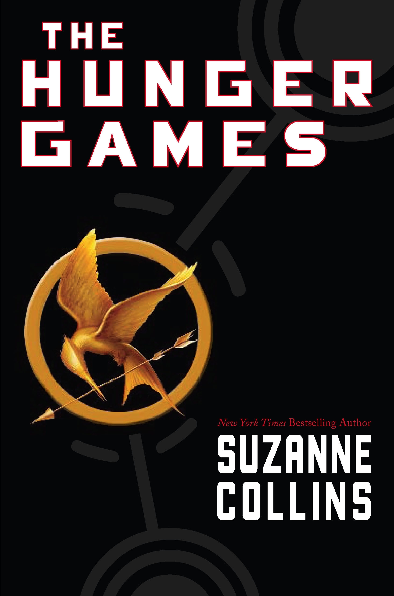
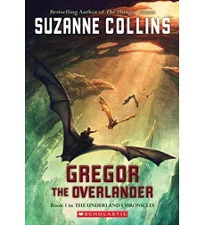
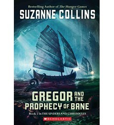
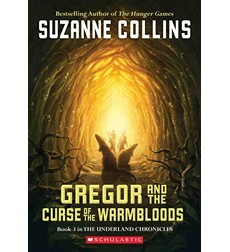
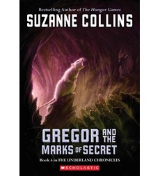
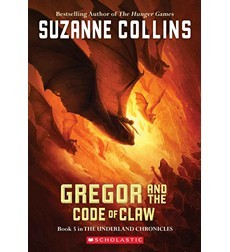

Works
An autobiographical picture book!

The final installment!

Sparks will fly!!
Let the Games begin!
Travel to the Underland with Gregor!/p> 
It's Gregor against the Bane!
Can Gregor save the Underland from a Plague?
Gregor learns the dangers of secrets!
The fate of the Underland is in Gregor's hands!

For computer game addicts and those who love them!
Selected Works
PICTURE BOOK
YEAR OF THE JUNGLE
"Important and necessary."
--Kirkus Reviews, STARRED REVIEW
WHEN CHARLIE MCBUTTON LOST POWER
"A clever, humorous story in rhyme."
--School Library Journal
SCI-FI
MOCKINGJAY
"...every bit as original and thought provoking, as The Hunger Games. Wow."
--Los Angeles Times
CATCHING FIRE
“...doesn’t disappoint when it segues into the pulse-pounding action readers have come to expect.”
--Publishers Weekly, STARRED REVIEW
THE HUNGER GAMES
“...a superb tale of physical adventure, political suspense, and romance."
--Booklist, STARRED REVIEW
FANTASY
GREGOR THE OVERLANDER
“...readers will likely find [the Underland] to be a fantastically engaging place.”
--Publishers Weekly, STARRED REVIEW
GREGOR AND THE PROPHECY OF BANE
“Yessss!”
--Kirkus Reviews
GREGOR AND THE CURSE OF THE WARMBLOODS
“...immensely readable installment..."
--The Horn Book Magazine
GREGOR AND THE MARKS OF SECRET
"...will leave readers gasping..."
--Kirkus Reviews, STARRED REVIEW
GREGOR AND THE CODE OF CLAW
"...excellent acquisition for any library."
--VOYA
QUICK LINKS
ScholasticPenguin Group
NPR
Listening Library
Indie Bound
Barnes & Noble
Books-A-Million
Amazon
Authors Guild
YEAR OF THE JUNGLE
When Suzy's father is called to war in a faraway jungle, she struggles to deal with his absence.(Scholastic Press, 2013)
MOCKINGJAY
Katniss Everdeen, girl on fire, has survived, even though her home has been destroyed. There are rebels. There are new leaders. A revolution is unfolding.(Scholastic Press, 2010)
CATCHING FIRE
Much to her shock, Katniss has fueled an unrest she's afraid she cannot stop. And what scares her more is that she's not entirely convinced she should try. As time draws near for Katniss and Peeta to visit the districts on the Capitol's cruel Victory Tour, the stakes are higher than ever. If they can't prove, without a shadow of a doubt, that they are lost in their love for each other, the consequences will be horrifying.(Scholastic Press, 2009)
THE HUNGER GAMES
Katniss is a 16-year-old girl living with her mother and younger sister in the poorest district of Panem, the remains of what used be North America. Long ago the districts waged war on the Capitol and were defeated. As part of the surrender terms, each district agreed to send one boy and one girl to appear in an annual televised event called, "The Hunger Games." The terrain, rules, and level of audience participation may change but one thing is constant: kill or be killed. When her sister is chosen by lottery, Katniss steps up to go in her place.(Scholastic Press, 2008)
GREGOR THE OVERLANDER
Meet Gregor, a kid from New York City, who falls out of his laundry room into a fantastical subterranean world called the Underland. Accompanied by his toddler sister, Boots, he encounters giant talking creatures-- cockroaches, bats, spiders and rats--and an unusual society of humans. And they’re all expecting him...(Scholastic Press, 2003)
GREGOR AND THE PROPHECY OF BANE
When giant roaches kidnap Boots and spirit her back to the Underland, Gregor follows to retrieve her. Soon he discovers that they are both implicated in “The Prophecy of Bane,” which warns of the dangers of a terrifying white rat. Guess whose job it is to destroy it? (Scholastic Press, 2004)
GREGOR AND THE CURSE OF THE WARMBLOODS
Gregor and Boots must return to the Underland to help find a cure for a deadly plague called the Curse of the Warmbloods. Gregor is desperate to succeed because, along with several of his Underland friends, a member of his own family is stricken. (Scholastic Press, 2005)
GREGOR AND THE MARKS OF SECRET
Gregor sets out to solve a mystery involving the Underland mice and ends up discovering a terrible secret. This book leads right into the fifth and final book of the series, "Gregor and the Code of Claw."(Scholastic Press, 2006)
GREGOR AND THE CODE OF CLAW
Everyone in the Underland has been taking great pains to keep The Prophecy of Time from Gregor. Gregor knows it must say something awful but he never imagined just how awful: It calls for the warrior's death. Now, with an army of rats approaching, and his mom and sister still in Regalia, Gregor the warrior must gather up his courage to help defend Regalia and get his family home safely. The entire existence of the Underland is in Gregor's hands, and time is running out. There is a code to be cracked, a mysterious new princess, Gregor's burgeoning dark side, and a war to end all wars.(Scholastic Press, 2007)
WHEN CHARLIE MCBUTTON LOST POWER
When a thunderstorm knocks out the electricity, Charlie McButton's whole tech empire comes tumbling down. He needs batteries–FAST. But the only batteries are inside his baby sister's beloved talking doll. Will he resort to desperate measures, and cause his sister to have a meltdown of her own? Or will he snap out of his computer craze long enough to realize sisters can be fun, even without batteries? (Penguin Group, 2005)